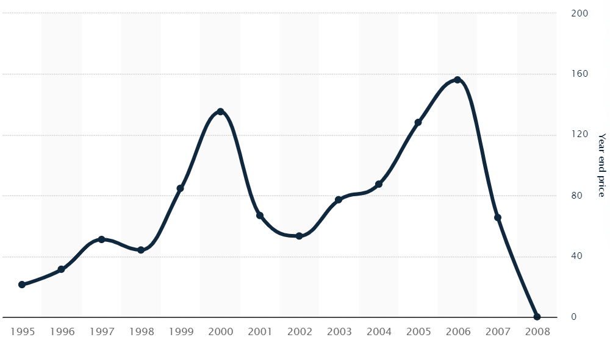
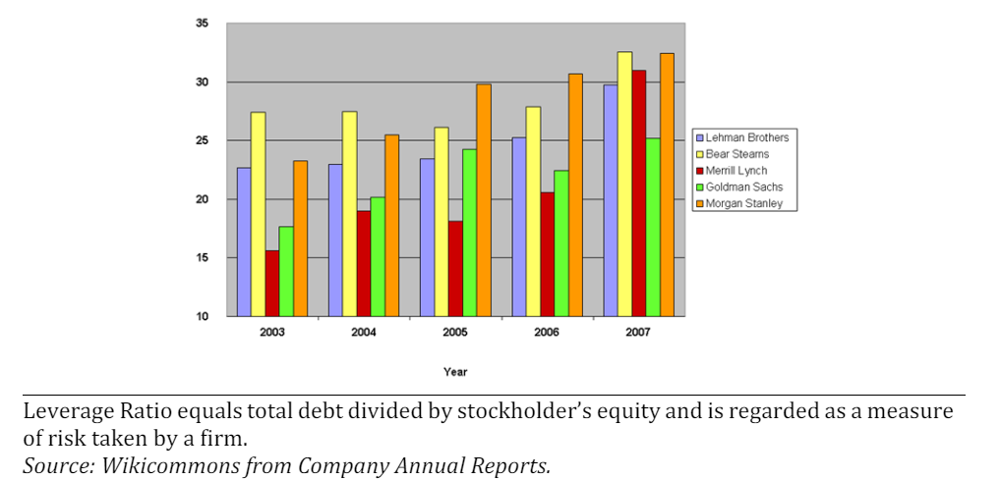
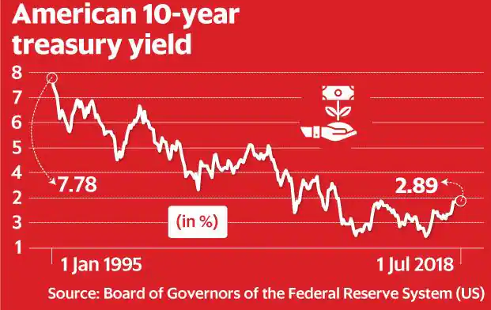
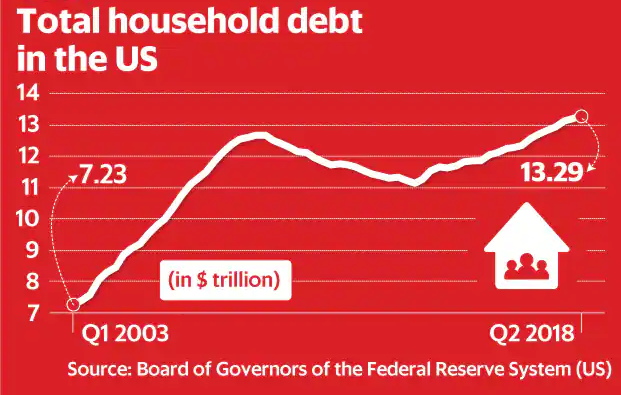

--- title: दुष्चक्र --- stateDiagram-v2 USGB: अमेरिका ने उधार लिया TRL: ब्याज दरें कम रखीं USB: लोगों ने सस्ते में लोन लिया USS: खर्च किया CJE: चीन / जापान ने कमाया CJL: चीन / जापान ने उधार दिया USB --> USS USS --> CJE CJE --> CJL CJL --> USGB USGB --> TRL TRL --> USB
पेजव्यू:
मेरा इस कहानी से एक खास लगाव है। मैं उसी दिन पैदा हुआ था जिस दिन लेहमन ब्रदर्स ने दिवालिया घोषित किया — 15 सितम्बर 2008। इसलिए मैंने अपने ब्लॉग की शुरुआत इसी कहानी से करने का फैसला किया।
इतिहास:
लेहमन ब्रदर्स की शुरुआत 1884 में हुई थी, जब हेनरी, इमैनुएल और मेयर लेहमन नाम के तीन जर्मन भाइयों ने अलबामा में एक जनरल स्टोर खोला। वहाँ किसान सामान के बदले कॉटन देते थे। अमेरिका की तेज़ी से बढ़ती इकॉनमी के चलते उन्होंने धीरे-धीरे ग्रोथ की और एक वक्त ऐसा आया जब वे देश के चौथे सबसे बड़े इन्वेस्टमेंट बैंक बन गए। उन्होंने कई आर्थिक झटके झेले, लेकिन अमेरिका के हाउसिंग मार्केट में गिरावट और उनके बहुत ज्यादा उधार में फंसे होने की वजह से उनका पतन हुआ।
सबप्राइम क्राइसिस और मॉर्गेज बैक्ड सिक्योरिटीज:
लेहमन ब्रदर्स ने मॉर्गेज बैक्ड सिक्योरिटीज (MBS) और कोलेटरलाइज़्ड डेट ऑब्लिगेशन (CDO) में हाथ आजमाना शुरू किया। अमेरिका के हाउसिंग बूम के टाइम उन्होंने BNC मॉर्गेज और ऑरोरा लोन सर्विस जैसी कंपनियों को खरीदा, जो Alt-A लोन देती थीं। सबको लगने लगा कि लेहमन का हर दांव सही बैठता है।
MBS और CDO क्या होते हैं?
MBS और CDO फाइनेंशियल इंजीनियरिंग के प्रोडक्ट्स हैं। MBS दरअसल बांड जैसे होते हैं, जो होम लोन के एक बंडल पर आधारित होते हैं। CDO एक ऐसा फाइनेंशियल प्रोडक्ट है जो कई लोन और दूसरे असेट्स पर आधारित होता है। डिटेल में पढ़ना है तो क्लिक करें: MBS और CDO क्या हैं
प्राइम, सबप्राइम और Alt-A लोन क्या होते हैं?
ये तीनों टाइप्स किसी होम लोन के रिस्क के आधार पर होते हैं। प्राइम सबसे सुरक्षित, उसके बाद Alt-A और फिर सबसे रिस्की सबप्राइम। और जानना चाहते हैं? तो क्लिक करें: प्राइम, सबप्राइम और Alt-A लोन
लेहमन ने बहुत से होम लोन को सिक्योरिटी में बदलकर भारी मुनाफा कमाया। 2006 में ही उन्होंने $146 बिलियन के मॉर्गेज को सिक्योरिटाइज़ किया। इससे उनकी इनकम 2004 से 2006 के बीच 56% बढ़ गई और 2005 से 2007 तक हर साल रिकॉर्ड प्रॉफिट दिखा। फरवरी 2007 में उनके शेयर का भाव अपने पीक पर था और मार्केट कैप लगभग $60 बिलियन पहुँच गया था।

सिक्योरिटी की वैल्यू उसके आधार पर निर्भर करती है कि उसके नीचे कौन सा असेट है। अगर होम लोन वापस नहीं आते, तो MBS की वैल्यू गिरती है। लेहमन ने Alt-A और सबप्राइम लोन वाली सिक्योरिटीज में काफी पैसा लगाया था, जिनमें डिफॉल्ट का खतरा बहुत ज्यादा था।
2007 की शुरुआत में जब हाउसिंग मार्केट में दरारें दिखने लगीं, तो सबप्राइम डिफॉल्ट्स बहुत बढ़ गए। इससे लेहमन की MBS और CDO की वैल्यू गिरने लगी और उनका शेयर भाव भी तेजी से गिरा। अगस्त 2007 में उन्होंने BNC यूनिट बंद कर दी और ऑरोरा की कई ब्रांचेज भी।
बहुत ज्यादा उधार (Leverage)
इसके बावजूद 2007 में लेहमन ने सबसे ज्यादा MBS खरीदी। उन्होंने $85 बिलियन का पोर्टफोलियो बना लिया जो उनकी शेयरहोल्डर इक्विटी से चार गुना था। ये पूरा पैसा उधार लेकर लगाया गया था और उन्होंने सारे वॉर्निंग साइन को इग्नोर किया।

?@fig-lehman-leverage में दिखाया गया है कि 2003 से लेकर 2007 तक हर बड़ी इन्वेस्टमेंट बैंक का लेवरेज बढ़ रहा था। 2007 में लेहमन का लेवरेज 31:1 था — यानि $1 की इक्विटी पर $31 का दांव। ऐसे में MBS की छोटी सी गिरावट भी बहुत बड़ा नुकसान कर सकती थी। लेकिन 2008 में तो गिरावट बहुत ज्यादा थी। जब सबप्राइम क्राइसिस शुरू हुआ, तो लेहमन की हालत और बिगड़ गई।
लेवरेज क्या होता है?
लेवरेज का मतलब है उधार लेकर इन्वेस्ट करना। ये फायदा तब देता है जब मार्केट में मुनाफा हो, लेकिन नुकसान होने पर नुकसान भी कई गुना ज्यादा होता है। डिटेल में पढ़ना है तो क्लिक करें: फाइनेंशियल लेवरेज
अंत की शुरुआत
जैसे-जैसे लोगों को ये समझ आने लगा कि लेहमन के MBS घाटे में हैं, उनके शेयरों की बिकवाली तेज हो गई। सिर्फ सितम्बर 2008 के पहले हफ्ते में शेयर 77% गिर गया। उन्होंने कई कोशिशें की — कमर्शियल रियल एस्टेट को अलग कंपनी बनाया, कोरियन डेवलपमेंट बैंक से बातचीत की, बार्कलेज और बैंक ऑफ अमेरिका से बातचीत की — लेकिन सब नाकाम रही।
15 सितम्बर 2008 को जब लेहमन के पास सिर्फ 1 बिलियन डॉलर की कैश बची थी, उन्होंने दिवालिया घोषित कर दिया। 12 सितम्बर के क्लोजिंग प्राइस के मुकाबले अगले कुछ दिनों में लेहमन का शेयर 93% तक गिर गया।
इतना ज्यादा उधार कैसे मिला?
जब मैंने पहली बार ये पढ़ा, तो सोचा कि इतनी ज्यादा लेवरेज लेहमन ने कैसे ली? क्या इस उधार पर कोई लागत नहीं थी? और सिर्फ लेहमन नहीं, बाकी बैंक भी ऐसा ही कर रहे थे। पोस्ट का बाकी हिस्सा इसी पर है।
डॉलर इकॉनॉमिक्स
द्वितीय विश्व युद्ध के बाद ग्लोबल ट्रेडिंग अमेरिकी डॉलर में होने लगी। दुनिया के सेंट्रल बैंकों के पास ढेर सारे डॉलर आ गए जिन्हें उन्होंने अमेरिका के ट्रेजरी सिक्योरिटीज़ में इन्वेस्ट कर दिया। इससे अमेरिका में ब्याज दरें बहुत कम रहीं। सरकार को बाहर से पैसा आ ही रहा था, इसलिए उन्हें ज्यादा ब्याज देने की ज़रूरत नहीं पड़ी। देखिए ?@fig-treasury-yield।
ट्रेजरी सिक्योरिटी क्या होती है?
ये सरकारी बॉन्ड होते हैं जिनसे अमेरिका अपनी खर्च की जरूरतें पूरी करता है। ये सबसे सुरक्षित इन्वेस्टमेंट माने जाते हैं।

जब सरकार की सिक्योरिटी का रेट कम होता है, तो लोगों और कंपनियों को भी सस्ते में लोन मिल जाता है — लेकिन थोड़ा ज्यादा ब्याज पर। इसका फायदा ये हुआ कि बैंक और लोग ज्यादा पैसा उधार ले पाए। इससे बबल बना और लोगों ने इतना उधार ले लिया जो वे चुका नहीं सकते थे।
2003 में कुल घरेलू उधार $7.2 ट्रिलियन था, जो 2008 तक $12.7 ट्रिलियन हो गया।

मेरे हिसाब से डॉलर ट्रेडिंग ने एक चक्र बना दिया है — अमेरिका उधार लेकर खर्च करता है, जापान/चीन उससे कमाई करते हैं और फिर वो पैसा अमेरिका में वापस लगाते हैं। इससे अमेरिका ब्याज दरें कम रखता है और लोग और भी ज्यादा उधार लेते हैं।